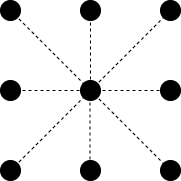

<< It is not recommended to run this applet on a mobile platform - All computations run locally in the browser >>
This React applet was built to help explore what persistent (co)homology can tell us about vortices and anti-vortices in XY model configurations. For more details see below.
To use:
Set the temperature (note: \(T_c \approx 0.9\))
Thermalise (can be worth clicking a few times)
Compute Persistence
Click on a point in the \(H_1\) persistence diagram to see a representative cocycle for that class and colour the configuration according to circular coordinates computed from that cocycle (as in [2])
Take Snapshot to save the current configuration and persistence diagram
Simulation of the XY Model
On an \(N\)x\(N\) square lattice of spins \(\{\theta_i\}\) the Hamiltonian of the XY Model is \( H(\{\theta_i\}) = -\sum_{\lt i, j>} cos(\theta_i - \theta_j) \), where \(i\), \(j\) are neighbouring sites on the lattice (with periodic boundary conditions). In order to draw sample configurations according to the Boltzmann distribution \(p(\{\theta_i\}) \propto exp(-\frac{H(\{\theta_i\})}{T})\), we can apply a Metropolis algorithm. That is, on each step we do the following:
Choose a random lattice site \(i\) and a random spin \(\theta_{new}\)
Calculate the change in energy \(\Delta H\) resulting from replacing \(\theta_i\) with \(\theta_{new}\)
If \(\Delta H \lt 0\) immediately replace \(\theta_i\) with \(\theta_{new}\). Otherwise, replace it with probability \(exp(-\frac{\Delta H}{T})\)
After repeating the above steps several thousand times the system thermalises and we begin to observe configurations that are typical for the set temperature.
Persistence
To compute persistent (co)homology we need to define some form of filtration of complexes on our configuration. It would be natural to use cubical complexes and compute cubical (co)homology, however in the interests of speed we would instead like to use a form of Vietoris-Rips complex. We therefore consider the graph with lattice sites as vertices, and edges joining each lattice site with its 8 neighbours:

In the filtration we introduce each vertex \(i\) at time \(0\), and each edge \((i,j)\) at a time equal to the angular difference in the spins \(\theta_i\) and \(\theta_j\). Alternatively this can be seen as a Vietoris-Rips filtration on \(N^2\) points \(\{i\}\) where \(d(i, j) = \left\{ \begin{array}{ll} \vert \theta_i - \theta_j \vert & \mbox{if } i, j \text{ neighbours} \\ \infty& \mbox{otherwise } \end{array} \right.\)
Since this filtration will join up regions of well-aligned spins early and regions with varying spins later, we should expect that it will soon fully connect the lattice sites far from the center of (anti-)vortices. This will leave 'holes' around the vortices which we can then detect as highly persistent classes in \(H_1\).
Circular Coordinates
This came out of playing around with some ideas from [2] and thinking about what extra information representative cocycles might give us about the rotating influence vortices have on the spins around them. The persistent homology calculation gives us a representative cocycle \(\alpha \in C^1(X; \mathbb{Z}_2) \) on the edges between sites, where \(X\) is our filtration at a particular time when \(\alpha\) exists. The idea here is to lift \(\alpha\) to a cocycle in \(C^1(X; \mathbb{Z})\) (here we just assume this can be done with no problems, although they could exist), then find a harmonic reprentative \(\bar{\alpha} = \alpha + \delta^0 f \in C^1(X;\mathbb{R})\) for some map \(f \in C^0(X;\mathbb{R})\). The harmonic representative is that which minimises the Euclidean norm \( \lVert \sum_{ab \in X^1} \alpha(ab) \rVert^2 \). Then \( (f\; mod\; \mathbb{Z}) : X^0 \rightarrow \mathbb{R}/\mathbb{Z}\) gives us some nice circular coordinates for each lattice site.
Implementation
This page was built using React. The persistent cohomology computation is handled using Ulrich Bauer's Ripser software [1], compiled to Web Assembly using Emscripten. Computation of the circular coordinates is done via a QR least-squares solver.
References
Ulrich Bauer, Ripser: efficient computation of Vietoris-Rips persistence barcodes, Aug 2019, arXiv:1908.02518
Vin de Silva, Dmitri Morozov & Mikael Vejdemo-Johansson, Persistent Cohomology and Circular Coordinates. Discrete Comput Geom 45, 737–759 (2011), doi:10.1007/s00454-011-9344-x